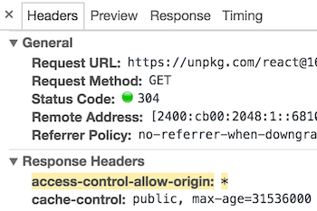

Getting Started
This page is an overview of the React documentation and related resources.
React is a JavaScript library for building user interfaces. Learn what React is all about on our homepage or in the tutorial.
Try React
React has been designed from the start for gradual adoption, and you can use as little or as much React as you need. Whether you want to get a taste of React, add some interactivity to a simple HTML page, or start a complex React-powered app, the links in this section will help you get started.
Online Playgrounds
If you’re interested in playing around with React, you can use an online code playground. Try a Hello World template on CodePen or CodeSandbox.
If you prefer to use your own text editor, you can also download this HTML file, edit it, and open it from the local filesystem in your browser. It does a slow runtime code transformation, so we’d only recommend using this for simple demos.
Add React to a Website
You can add React to an HTML page in one minute. You can then either gradually expand its presence, or keep it contained to a few dynamic widgets.
Create a New React App
When starting a React project, a simple HTML page with script tags might still be the best option. It only takes a minute to set up!
As your application grows, you might want to consider a more integrated setup. There are several JavaScript toolchains we recommend for larger applications. Each of them can work with little to no configuration and lets you take full advantage of the rich React ecosystem.
Learn React
People come to React from different backgrounds and with different learning styles. Whether you prefer a more theoretical or a practical approach, we hope you’ll find this section helpful.
- If you prefer to learn by doing, start with our practical tutorial.
- If you prefer to learn concepts step by step, start with our guide to main concepts.
Like any unfamiliar technology, React does have a learning curve. With practice and some patience, you will get the hang of it.
First Examples
The React homepage contains a few small React examples with a live editor. Even if you don’t know anything about React yet, try changing their code and see how it affects the result.
JavaScript Resources
The React documentation assumes some familiarity with programming in the JavaScript language. You don’t have to be an expert, but it’s harder to learn both React and JavaScript at the same time.
We recommend going through this JavaScript overview to check your knowledge level. It will take you between 30 minutes and an hour but you will feel more confident learning React.
Tip
Whenever you get confused by something in JavaScript, MDN and javascript.info are great websites to check. There are also community support forums where you can ask for help.
Practical Tutorial
If you prefer to learn by doing, check out our practical tutorial. In this tutorial, we build a tic-tac-toe game in React. You might be tempted to skip it because you’re not building games — but give it a chance. The techniques you’ll learn in the tutorial are fundamental to building any React apps, and mastering it will give you a much deeper understanding.
Step-by-Step Guide
If you prefer to learn concepts step by step, our guide to main concepts is the best place to start. Every next chapter in it builds on the knowledge introduced in the previous chapters so you won’t miss anything as you go along.
Thinking in React
Many React users credit reading Thinking in React as the moment React finally “clicked” for them. It’s probably the oldest React walkthrough but it’s still just as relevant.
Recommended Courses
Sometimes people find third-party books and video courses more helpful than the official documentation. We maintain a list of commonly recommended resources, some of which are free.
Advanced Concepts
Once you’re comfortable with the main concepts and played with React a little bit, you might be interested in more advanced topics. This section will introduce you to the powerful, but less commonly used React features like context and refs.
API Reference
This documentation section is useful when you want to learn more details about a particular React API. For example, React.Component API reference can provide you with details on how setState() works, and what different lifecycle hooks are useful for.
Glossary and FAQ
The glossary contains an overview of the most common terms you’ll see in the React documentation. There is also a FAQ section dedicated to short questions and answers about common topics, including making AJAX requests, component state, and file structure.
Staying Informed
The React blog is the official source for the updates from the React team. Anything important, including release notes or deprecation notices, will be posted there first.
You can also follow the @reactjs account on Twitter, but you won’t miss anything essential if you only read the blog.
Not every React release deserves its own blog post, but you can find a detailed changelog for every release in the CHANGELOG.md file in the React repository, as well as on the Releases page.
Versioned Documentation
This documentation always reflects the latest stable version of React. Since React 16, you can find older versions of the documentation on a separate page. Note that documentation for past versions is snapshotted at the time of the release, and isn’t being continuously updated.
Something Missing?
If something is missing in the documentation or if you found some part confusing, please file an issue for the documentation repository with your suggestions for improvement, or tweet at the @reactjs account. We love hearing from you!
Add React to a Website
Use as little or as much React as you need.
React has been designed from the start for gradual adoption, and you can use as little or as much React as you need. Perhaps you only want to add some “sprinkles of interactivity” to an existing page. React components are a great way to do that.
The majority of websites aren’t, and don’t need to be, single-page apps. With a few lines of code and no build tooling, try React in a small part of your website. You can then either gradually expand its presence, or keep it contained to a few dynamic widgets.
- Add React in One Minute
- Optional: Try React with JSX (no bundler necessary!)
Add React in One Minute
In this section, we will show how to add a React component to an existing HTML page. You can follow along with your own website, or create an empty HTML file to practice.
There will be no complicated tools or install requirements — to complete this section, you only need an internet connection, and a minute of your time.
Optional: Download the full example (2KB zipped)
Step 1: Add a DOM Container to the HTML
First, open the HTML page you want to edit. Add an empty <div> tag to mark the spot where you want to display something with React. For example:
<!-- ... existing HTML ... -->
<div id="like_button_container"></div>
<!-- ... existing HTML ... -->We gave this <div> a unique id HTML attribute. This will allow us to find it from the JavaScript code later and display a React component inside of it.
Tip
You can place a “container”
<div>like this anywhere inside the<body>tag. You may have as many independent DOM containers on one page as you need. They are usually empty — React will replace any existing content inside DOM containers.
Step 2: Add the Script Tags
Next, add three <script> tags to the HTML page right before the closing </body> tag:
<!-- ... other HTML ... -->
<!-- Load React. -->
<!-- Note: when deploying, replace "development.js" with "production.min.js". -->
<script src="https://unpkg.com/react@16/umd/react.development.js" crossorigin></script>
<script src="https://unpkg.com/react-dom@16/umd/react-dom.development.js" crossorigin></script>
<!-- Load our React component. -->
<script src="like_button.js"></script>
</body>The first two tags load React. The third one will load your component code.
Step 3: Create a React Component
Create a file called like_button.js next to your HTML page.
Open this starter code and paste it into the file you created.
Tip
This code defines a React component called
LikeButton. Don’t worry if you don’t understand it yet — we’ll cover the building blocks of React later in our hands-on tutorial and main concepts guide. For now, let’s just get it showing on the screen!
After the starter code, add two lines to the bottom of like_button.js:
// ... the starter code you pasted ...
const domContainer = document.querySelector('#like_button_container');
ReactDOM.render(e(LikeButton), domContainer);
These two lines of code find the <div> we added to our HTML in the first step, and then display our “Like” button React component inside of it.
That’s It!
There is no step four. You have just added the first React component to your website.
Check out the next sections for more tips on integrating React.
View the full example source code
Download the full example (2KB zipped)
Tip: Reuse a Component
Commonly, you might want to display React components in multiple places on the HTML page. Here is an example that displays the “Like” button three times and passes some data to it:
View the full example source code
Download the full example (2KB zipped)
Note
This strategy is mostly useful while React-powered parts of the page are isolated from each other. Inside React code, it’s easier to use component composition instead.
Tip: Minify JavaScript for Production
Before deploying your website to production, be mindful that unminifed JavaScript can significantly slow down the page for your users.
If you already minify the application scripts, your site will be production-ready if you ensure that the deployed HTML loads the versions of React ending in production.min.js:
<script src="https://unpkg.com/react@16/umd/react.production.min.js" crossorigin></script>
<script src="https://unpkg.com/react-dom@16/umd/react-dom.production.min.js" crossorigin></script>If you don’t have a minification step for your scripts, here’s one way to set it up.
Optional: Try React with JSX
In the examples above, we only relied on features that are natively supported by the browsers. This is why we used a JavaScript function call to tell React what to display:
const e = React.createElement;
// Display a "Like" <button>
return e(
'button',
{ onClick: () => this.setState({ liked: true }) },
'Like'
);However, React also offers an option to use JSX instead:
// Display a "Like" <button>
return (
<button onClick={() => this.setState({ liked: true })}>
Like
</button>
);These two code snippets are equivalent. While JSX is completely optional, many people find it helpful for writing UI code — both with React and with other libraries.
You can play with JSX using this online converter.
Quickly Try JSX
The quickest way to try JSX in your project is to add this <script> tag to your page:
<script src="https://unpkg.com/babel-standalone@6/babel.min.js"></script>Now you can use JSX in any <script> tag by adding type="text/babel" attribute to it. Here is an example HTML file with JSX that you can download and play with.
This approach is fine for learning and creating simple demos. However, it makes your website slow and isn’t suitable for production. When you’re ready to move forward, remove this new <script> tag and the type="text/babel" attributes you’ve added. Instead, in the next section you will set up a JSX preprocessor to convert all your <script> tags automatically.
Add JSX to a Project
Adding JSX to a project doesn’t require complicated tools like a bundler or a development server. Essentially, adding JSX is a lot like adding a CSS preprocessor. The only requirement is to have Node.js installed on your computer.
Go to your project folder in the terminal, and paste these two commands:
- Step 1: Run
npm init -y(if it fails, here’s a fix) - Step 2: Run
npm install babel-cli@6 babel-preset-react-app@3
Tip
We’re using npm here only to install the JSX preprocessor; you won’t need it for anything else. Both React and the application code can stay as
<script>tags with no changes.
Congratulations! You just added a production-ready JSX setup to your project.
Run JSX Preprocessor
Create a folder called src and run this terminal command:
npx babel --watch src --out-dir . --presets react-app/prod Note
npx is not a typo — it’s a package runner tool that comes with npm 5.2+.
If you see an error message saying “You have mistakenly installed the babel package”, you might have missed the previous step. Perform it in the same folder, and then try again.
Don’t wait for it to finish — this command starts an automated watcher for JSX.
If you now create a file called src/like_button.js with this JSX starter code, the watcher will create a preprocessed like_button.js with the plain JavaScript code suitable for the browser. When you edit the source file with JSX, the transform will re-run automatically.
As a bonus, this also lets you use modern JavaScript syntax features like classes without worrying about breaking older browsers. The tool we just used is called Babel, and you can learn more about it from its documentation.
If you notice that you’re getting comfortable with build tools and want them to do more for you, the next section describes some of the most popular and approachable toolchains. If not — those script tags will do just fine!
Create a New React App
Use an integrated toolchain for the best user and developer experience.
This page describes a few popular React toolchains which help with tasks like:
- Scaling to many files and components.
- Using third-party libraries from npm.
- Detecting common mistakes early.
- Live-editing CSS and JS in development.
- Optimizing the output for production.
The toolchains recommended on this page don’t require configuration to get started.
You Might Not Need a Toolchain
If you don’t experience the problems described above or don’t feel comfortable using JavaScript tools yet, consider adding React as a plain <script> tag on an HTML page, optionally with JSX.
This is also the easiest way to integrate React into an existing website. You can always add a larger toolchain if you find it helpful!
Recommended Toolchains
The React team primarily recommends these solutions:
- If you’re learning React or creating a new single-page app, use Create React App.
- If you’re building a server-rendered website with Node.js, try Next.js.
- If you’re building a static content-oriented website, try Gatsby.
- If you’re building a component library or integrating with an existing codebase, try More Flexible Toolchains.
Create React App
Create React App is a comfortable environment for learning React, and is the best way to start building a new single-page application in React.
It sets up your development environment so that you can use the latest JavaScript features, provides a nice developer experience, and optimizes your app for production. You’ll need to have Node >= 6 and npm >= 5.2 on your machine. To create a project, run:
npx create-react-app my-app
cd my-app
npm startNote
npx on the first line is not a typo — it’s a package runner tool that comes with npm 5.2+.
Create React App doesn’t handle backend logic or databases; it just creates a frontend build pipeline, so you can use it with any backend you want. Under the hood, it uses Babel and webpack, but you don’t need to know anything about them.
When you’re ready to deploy to production, running npm run build will create an optimized build of your app in the build folder. You can learn more about Create React App from its README and the User Guide.
Next.js
Next.js is a popular and lightweight framework for static and server‑rendered applications built with React. It includes styling and routing solutions out of the box, and assumes that you’re using Node.js as the server environment.
Learn Next.js from its official guide.
Gatsby
Gatsby is the best way to create static websites with React. It lets you use React components, but outputs pre-rendered HTML and CSS to guarantee the fastest load time.
Learn Gatsby from its official guide and a gallery of starter kits.
More Flexible Toolchains
The following toolchains offer more flexiblity and choice. We recommend them to more experienced users:
-
Neutrino combines the power of webpack with the simplicity of presets, and includes a preset for React apps and React components.
-
nwb is particularly great for publishing React components for npm. It can be used for creating React apps, too.
-
Parcel is a fast, zero configuration web application bundler that works with React.
-
Razzle is a server-rendering framework that doesn’t require any configuration, but offers more flexibility than Next.js.
Creating a Toolchain from Scratch
A JavaScript build toolchain typically consists of:
-
A package manager, such as Yarn or npm. It lets you take advantage of a vast ecosystem of third-party packages, and easily install or update them.
-
A bundler, such as webpack or Parcel. It lets you write modular code and bundle it together into small packages to optimize load time.
-
A compiler such as Babel. It lets you write modern JavaScript code that still works in older browsers.
If you prefer to set up your own JavaScript toolchain from scratch, check out this guide that re-creates some of the Create React App functionality.
Don’t forget to ensure your custom toolchain is correctly set up for production.
CDN Links
Both React and ReactDOM are available over a CDN.
<script crossorigin src="https://unpkg.com/react@16/umd/react.development.js"></script>
<script crossorigin src="https://unpkg.com/react-dom@16/umd/react-dom.development.js"></script>The versions above are only meant for development, and are not suitable for production. Minified and optimized production versions of React are available at:
<script crossorigin src="https://unpkg.com/react@16/umd/react.production.min.js"></script>
<script crossorigin src="https://unpkg.com/react-dom@16/umd/react-dom.production.min.js"></script>To load a specific version of react and react-dom, replace 16 with the version number.
Why the crossorigin Attribute?
If you serve React from a CDN, we recommend to keep the crossorigin attribute set:
<script crossorigin src="..."></script>We also recommend to verify that the CDN you are using sets the Access-Control-Allow-Origin: * HTTP header:

This enables a better error handling experience in React 16 and later.
Hello World
The smallest React example looks like this:
ReactDOM.render(
<h1>Hello, world!</h1>,
document.getElementById('root')
);It displays a heading saying “Hello, world!” on the page.
Click the link above to open an online editor. Feel free to make some changes, and see how they affect the output. Most pages in this guide will have editable examples like this one.
How to Read This Guide
In this guide, we will examine the building blocks of React apps: elements and components. Once you master them, you can create complex apps from small reusable pieces.
Tip
This guide is designed for people who prefer learning concepts step by step. If you prefer to learn by doing, check out our practical tutorial. You might find this guide and the tutorial complementary to each other.
This is the first chapter in a step-by-step guide about main React concepts. You can find a list of all its chapters in the navigation sidebar. If you’re reading this from a mobile device, you can access the navigation by pressing the button in the bottom right corner of your screen.
Every chapter in this guide builds on the knowledge introduced in earlier chapters. You can learn most of React by reading the “Main Concepts” guide chapters in the order they appear in the sidebar. For example, “Introducing JSX” is the next chapter after this one.
Knowledge Level Assumptions
React is a JavaScript library, and so we’ll assume you have a basic understanding of the JavaScript language. If you don’t feel very confident, we recommend going through a JavaScript tutorial to check your knowledge level and enable you to follow along this guide without getting lost. It might take you between 30 minutes and an hour, but as a result you won’t have to feel like you’re learning both React and JavaScript at the same time.
Note
This guide occasionally uses some of the newer JavaScript syntax in the examples. If you haven’t worked with JavaScript in the last few years, these three points should get you most of the way.
Let’s Get Started!
Keep scrolling down, and you’ll find the link to the next chapter of this guide right before the website footer.